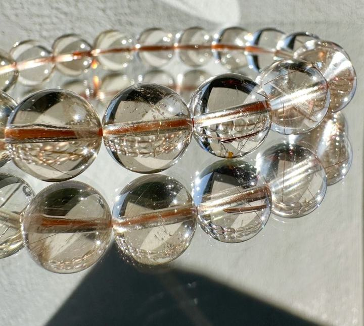

阿諾的礦物小筆記
銅髮晶
Copper-toned inclusion selection
銅色或暖色針絲在珠體裡交錯，角度改變時會看到不同密度的線條。挑選時可以比較通透度、髮絲方向與每顆的自然差異。
看官網現有款式產地與礦物結構
產地背景
本款原料採礦地尚未確認，不單由髮絲顏色推定產地。
礦物結構與名稱
「銅髮」是針絲狀內含物的市場形容，不能直接認定含金屬銅。石英與內含物的精確組成仍需對應檢測資料。
本頁產地是礦種資料中的產出紀錄，不代表照片中商品已完成產地鑑定；原料產地、加工地與販售地是不同資訊。
能量寓意與日常陪伴
自信 · 果斷與勇氣 · 招財寓意
銅髮晶的民間寓意常談到自信、果斷及招財，適合作為努力累積、勇於做決定的小提醒；財運屬祝福，不是收入或投資結果的承諾。
以上為網路資料中的民間能量說法與文化寓意，僅供介紹參考，不代表科學功效或效果保證。
適合怎麼搭配？
米白、駝色、咖啡與簡單深色上衣都能呼應暖色線條。
日常保養
避免撞擊、劇烈溫差與浸泡，不使用超音波清潔。
看完整保養指南 →官網上的 銅髮晶 款式
沿用商品原名稱與照片；售價、庫存及服務依賣場最新資訊確認。
礦石寓意與能量相關內容整理自網路資料，僅供介紹參考，並非科學功效或效果保證。